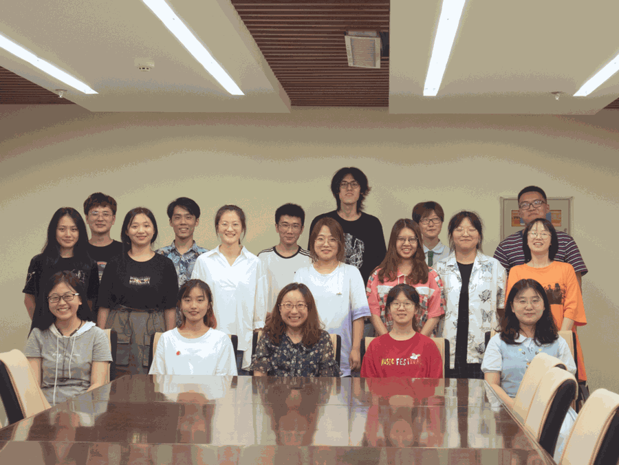
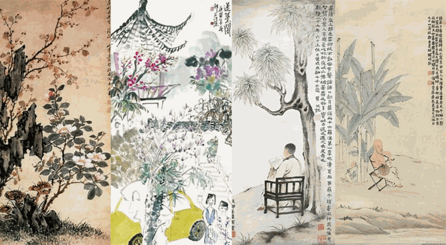

【徜扬恣肆·五】春风十里扬州路，卷上珠帘总不如
行者无疆
春风十里扬州路
卷上珠帘总不如

久闻扬州美，文化底蕴浓厚，此次社会实践由于疫情所限未能造访扬州本地，作为行者无疆实践团的成员，我们在线上通过各种方式了解扬州、认识扬州、感受扬州。

千年古邑的扬州地处江苏中部，长江下游的北岸，江淮平原的南端，历来便为水陆交通的枢纽，南北漕运的咽喉，同时，它还是我国历史文化名城，拥有2500多年的历史，曾是“富甲天下”的淮左名都。
隋唐时期，瘦西湖沿岸陆续建园。及至清代，由于康熙、乾隆两代帝王六度“南巡”，形成了“两堤花柳全依水，一路楼台直到山”的盛况，历史上有二十四景著称于世。
扬州传统文化源远流长，最有名的便是扬州八怪，通过本次社会实践，我对这个“怪”字有了新的认识，本次实践我们有幸邀请到扬州八怪纪念馆办公室主任倪悦老师，在倪老师的讲解中，扬州八怪的形象在我们心中不断清晰。

扬州八怪是中国清代中期活动于扬州地区一批风格相近的书画家总称，或称扬州画派。在中国画史上说法不一，较为公认指：金农、郑燮、黄慎、李鳝、李方膺、汪士慎、罗聘、高翔八人。八怪本身，在生活上大都历经坎坷，最后走上了以卖画为生的道路。他们虽然卖画，却是以画寄情，在书画艺术上有更高的追求，不愿流入一般画工的行列。他们有着不平之气，有无限激愤，对贫民阶层深表同情。他们凭着知识分子的敏锐洞察力和善良的同情心，对丑恶的事物和人，加以抨击，或著于诗文，或表诸书画。

春风十里扬州路，卷上珠帘总不如。
虽然有种种遗憾，但行者永远在路上，
华夏五千载文明硕果璀璨，
有更多的风景等待我们去探寻，
有更多精神等待我们去传承。